钱是什么
一张纸，为什么能换全世界
很久以前，世界上没有钱。你想要别人的东西，只能拿自己的东西去换。
你家养羊，想吃麦子，就得牵一只羊去找种麦子的人。可问题来了——
万一人家不要羊，只要盐呢？你得先把羊换成盐，再拿盐去换麦子。绕一大圈，腿都跑断了。
而且，一只羊怎么分？半只羊就死了。交换实在太麻烦了。人们急需一个'大家都认的中间物'。
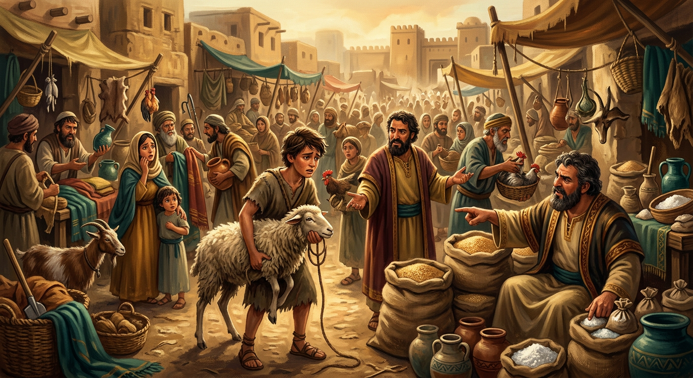
慢慢人们发现，有些东西特别适合当'中间物'。
海边的人用贝壳——漂亮、稀少、好携带、坏不了；有的地方用盐——人人都要吃盐；太平洋有个岛，居然用大石头当钱。
看出规律了吗？能当钱的东西，必须稀少、耐用、好带、大家都认。
在中国，'钱'这个字，偏旁是'贝'。因为最早的汉字里，钱就是贝壳变的。
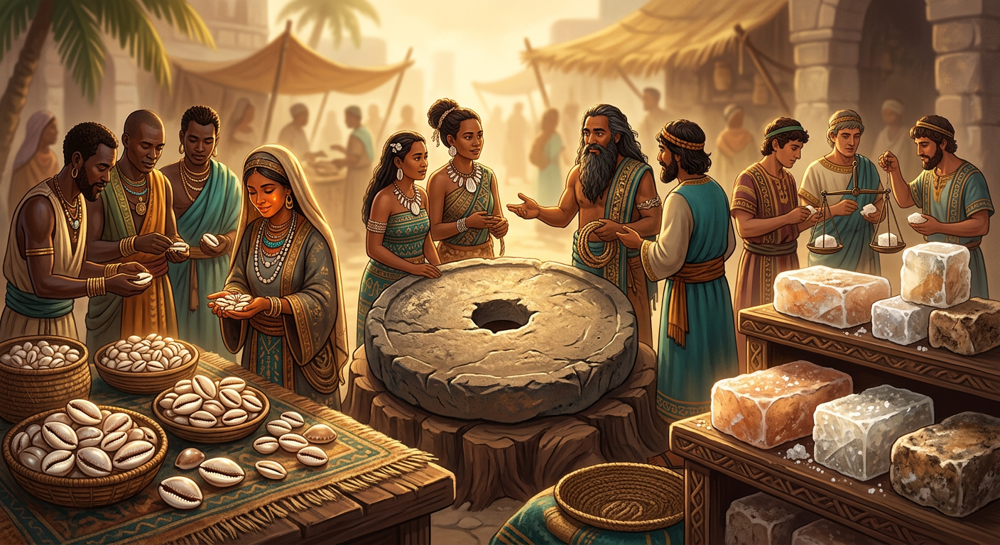
贝壳虽好，可大小不一、容易碎。人们想要更标准的钱。
在小亚细亚有个叫吕底亚的王国（今天的土耳其），他们做了一件大事：
把金银铸成大小、重量都一样的圆片，还在上面盖上国王的印章。
这个章的意思是：'我保证它值这么多。'从此，你不用称重量、不用验成色——看到章就放心。钱，第一次有了'国家信用'。
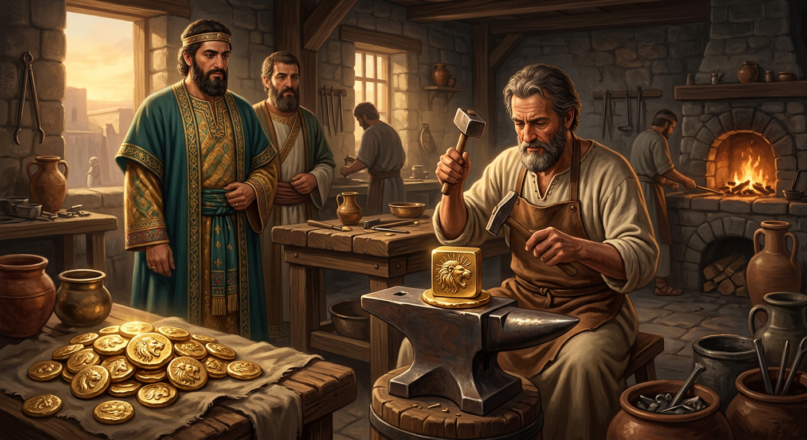
铜钱、金币太重了。买一匹好马，得拉一车子钱，又沉又招贼。
北宋时，四川的商人想了个办法：把钱存在铺子里，铺子开一张纸做的凭证，叫'交子'。
你拿着这张纸，到别处就能换钱、买东西。纸比铜钱轻多了，生意一下子好做了。
这是全世界最早的纸币，比欧洲早了好几百年。一张纸能当钱，靠的是大家相信它能换回真钱。
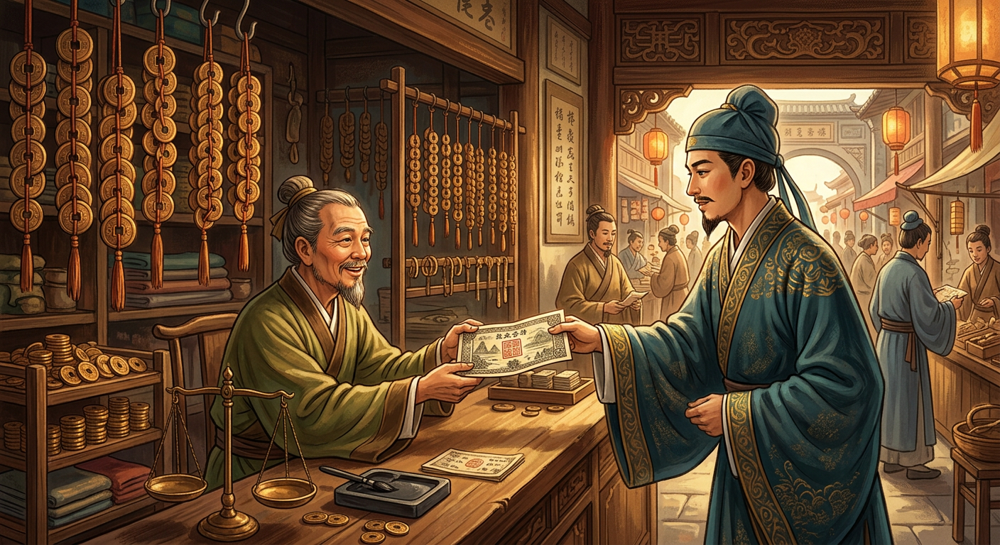
意大利威尼斯，商人们来来往往，带着各国的钱，兑换特别麻烦。
于是出现了一种人，坐在广场的长凳上，帮你换钱、存钱、记账。'银行'这个词，就是从意大利语'长凳'来的。
后来他们发现：存钱的人不会同时来取钱。于是把别人存的钱，偷偷借出去收利息——手里的钱，就这么'变多'了。
这就是银行的秘密：你存一块钱，银行能把它当成好几块钱用。钱，开始被'造'出来。
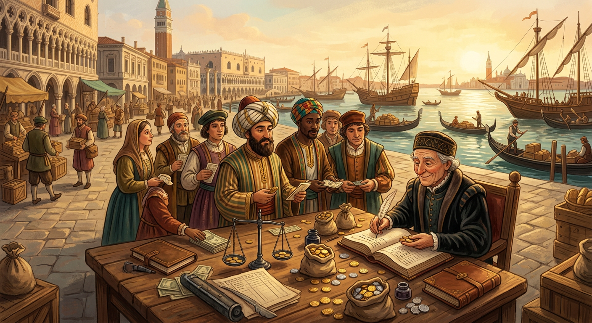
纸币方便，可总有人不放心：万一这纸变不出钱呢？
各国想了个让人安心的办法，叫金本位：政府承诺，你手里的每一张纸币，随时能到银行换回固定重量的黄金。
这下没人慌了。纸币背后有真金兜底，大家用得踏踏实实。
你看，钱越来越'虚'，但靠的是一句越来越实的承诺。问题是——这个承诺，能一直兑现吗？
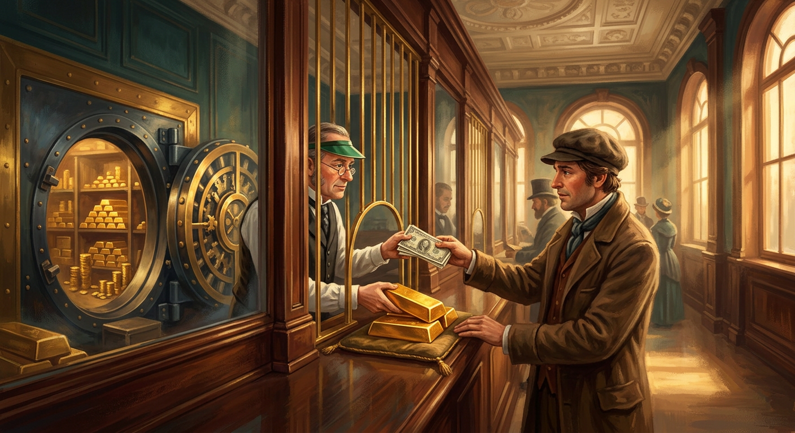
1971年，发生了一件改变全世界的事。
美国总统尼克松宣布：美元不再兑换黄金。那句'随时换真金'的承诺，作废了。
从那天起，钱背后不再有金子了。那一美元、一百块，只是一张纸、一个数字。
那它为什么还能买东西？因为所有人都相信它有用，国家也用法律给它撑腰。钱，彻底变成了一种'信心'。只要信心在，纸就是钱。
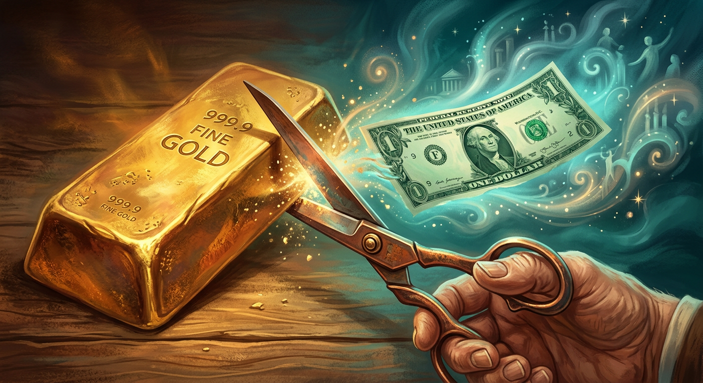
每个国家都有一个管钱的'总闸门'，叫中央银行（中国的叫中国人民银行，美国的叫美联储）。
它能决定：印多少钱、钱借出去贵不贵。
如果印太多钱，东西还是那么多，那每块钱能买到的东西就变少了——以前一块钱一根冰棍，后来要五块。这叫通货膨胀，老人管它叫'钱变毛了'。
所以央行的工作，是让钱不多不少刚刚好：太少经济转不动，太多钱就毛了。这是个技术活。
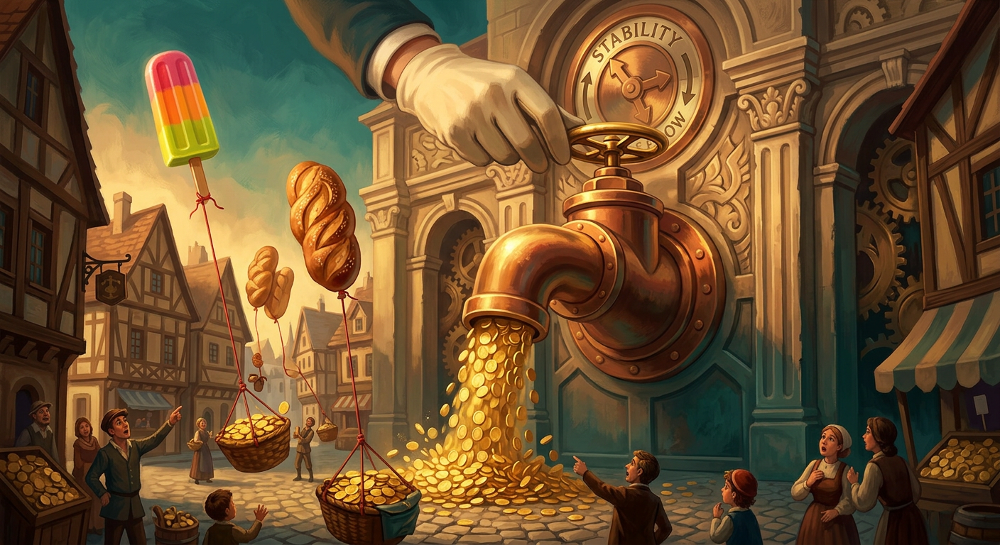
到了点点这一代，钱又变了——连纸都看不见了。
爸爸妈妈买早点，掏出手机'嘀'一下；你过生日，爷爷奶奶发来个红包。钱变成了手机里的一串数字。
这背后，是微信、支付宝在帮你记账：你扫一下，它就从你的账户减一点，给商家的账户加一点。
方便是真方便，但也意味着：你的每一笔钱，平台都记得清清楚楚。钱越方便，越离不开那套记账的系统。
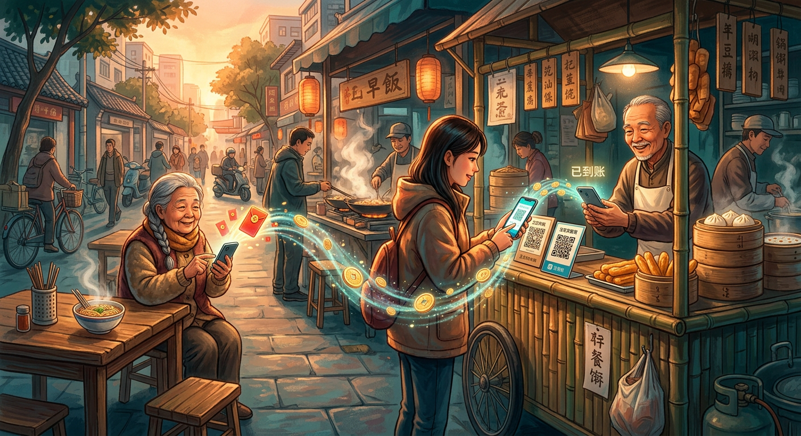
还有一种钱，更神奇——你还没挣到，就能先花。
信用卡、花呗，都是这个逻辑：先看中的东西先买，下个月再还钱。
听起来很美，对吧？但如果你还不上，或者只还一点点，剩下的就要付利息——而且利息不低。
这就是它赚钱的方式：它巴不得你慢慢还，还得越慢，它赚得越多。先甜后苦，世界上最贵的东西，常常是'免费先用'的。
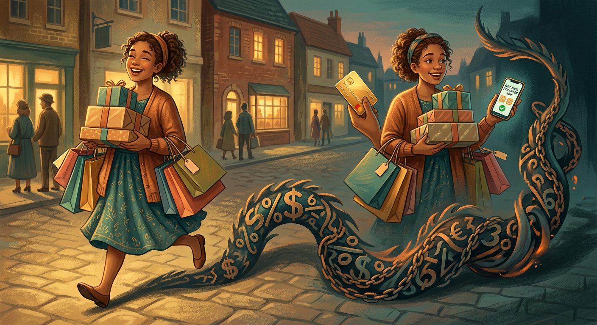
既然钱靠的是'相信'，那能不能不靠国家、不靠银行，造一种钱？
2009年，一个自称'中本聪'的神秘人（到现在也没人知道他是谁），做出了比特币。
它没有银行管，靠的是一套全世界电脑一起维护的账本，谁也改不了、赖不掉。总量还写死在代码里，只有2100万个，谁都印不出来。
有人说这是未来，有人说这是泡沫。但它证明了一件事：人们开始尝试，用代码来建立'信任'，而不是用银行和政府。
点点，从一只羊讲到比特币，其实就一句话：钱是人们'约定好都相信'的东西。
贝壳也好、金币也好、手机里的数字也好，它们本身都不值钱。值钱的，是背后那份信任。
所以记住两件事：第一，钱会变。今天的纸币，也许几十年后就像贝壳一样进了博物馆。
第二，也是最重要的——钱是工具，不是目的。有人拼命追钱，最后成了钱的奴隶；有人看懂钱，让钱帮自己做事、帮别人解难。
愿你是后者：看懂钱，用好钱，但永远不要只为了钱。
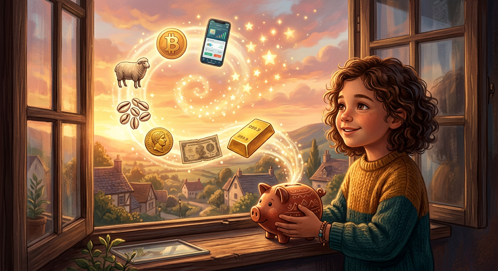